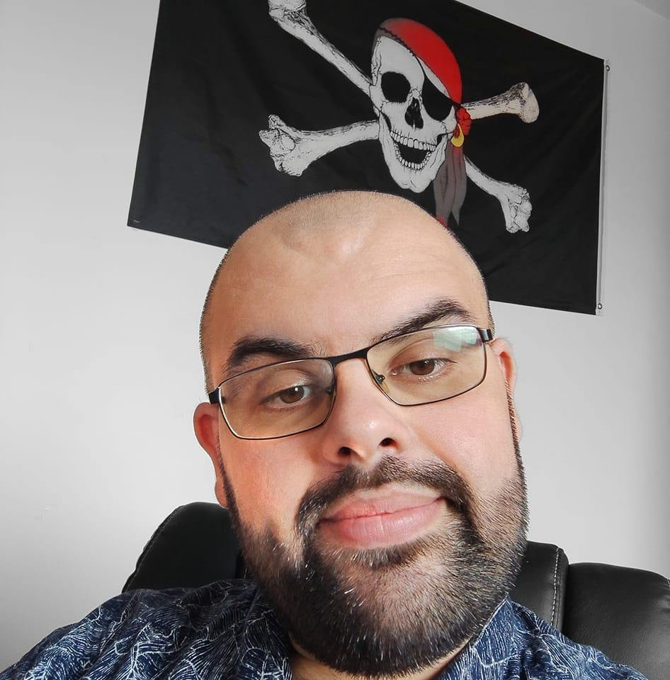
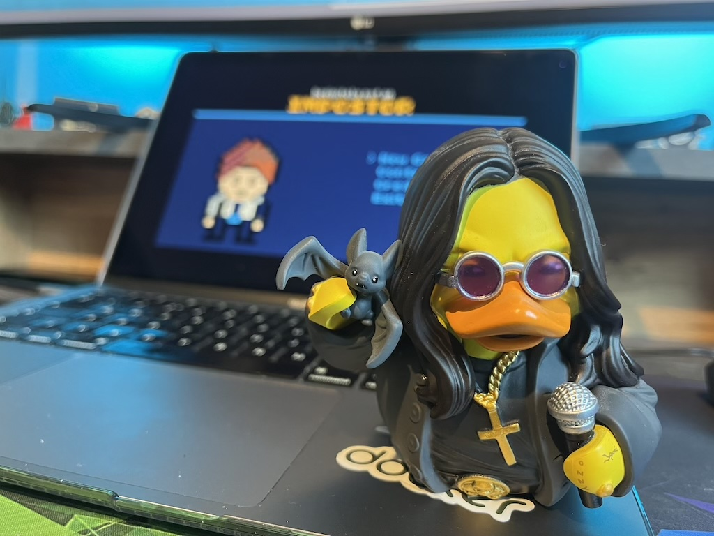
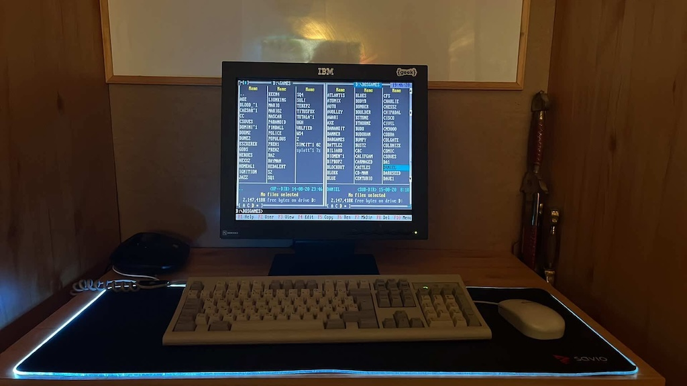

About Me

- Birthday
- 1987.06.16
- Birthplace
- Budapest
- Age
- 39
- Location
- Szeged, HU
- rastasi@gmail.com
- Phone
- +3620-489-35-35
- Web
- teletype.hu
Hi! I'm Tasi, a 39-year-old IT expert who fell in love with programming and IT system architectures. I was 11 (in 1999) when I learned HTML and the basics of the web, so I grew up with the Hungarian web culture. In the last 20 years, I have worked with a lot of technologies through many trends and eras of IT, from table-based static websites to the VueJS-based dynamic SPA-s, or from Drupal-powered sites to ESP32 microcontroller programming. I'm competent in more than 10 programming languages and countless frameworks. Since 2025, I am a member of the John von Neumann Computer Society (NJSZT).
Studies
My orientation is basically technical, I have loved the electronic world since my childhood, but besides that, I love to work with people, especially with children. I have a strong sense of how to teach and present any topic. I'm a system administrator and a Waldorf teacher as well.
- 2002-2008Petrik Lajos Secondary SchoolSystem administration (OKJ 54 4641 03)
- 2008-2012Török Sándor Waldorf-pedagogical InstituteWaldorf teacher (drama)
- 2023Centre of Vocational Education SzegedCultural event organizer
Technologies
Over the last 20 years, I have worked with many technologies. Whenever I have an idea or a new job, I always concentrate on finding solutions, not on the technology stack which provides them. I have the courage and curiosity to learn new languages and frameworks. Whatever the stack, I apply the same principles: clear layers, pinned dependencies, documented public APIs and reproducible CI builds.
Backend Programming
- Databases90%MySQL/MariaDB, Postgres, MongoDB, ElasticSearch
- Node.js95%TypeScript, Express, Sequelize, Mongoose, Knex
- Ruby100%Rails, Sinatra, Padrino, Grape, Rack::App, own gems (rubbs BBS framework, warp_engine)
- Golang85%
- Python65%Django, Flask
- PHP70%Drupal (5.x, 6.x, 7.x)
Frontend Programming
- HTML, CSS100%
- CSS Frameworks75%Foundation, Bootstrap, Material UI
- Vue.js85%
- React.js70%
- TypeScript85%VS Code extensions, Electron
DevOps
- Docker95%Docker, Compose, Swarm
- Orchestration65%Kubernetes, Helm, Ansible, Terraform
- Sysadmin100%Debian/Ubuntu, ISPConfig3, VMware, Gitea, Woodpecker CI, Authentik SSO
- Observability75%Grafana, Alloy, Loki, Uptime Kuma, Matomo
Message Brokers
- RabbitMQ70%
- MQTT80%
- NATS80%
Other Technologies
- Pascal/Delphi30%
- ESP32, C++50%ESP32, C++ for DOS (Open Watcom)
- 6502 Assembly60%ACME, cc65 (Commodore 64, Plus/4)
- Lua70%TIC-80
AI Knowledge
- Claude85%Skills, Plugins, Hooks, MCP servers (own, in Go)
- Gemini60%
- Ollama50%
- LM Studio50%
- llama.cpp60%Self-hosted model server
How I Work
Over the years I have collected a set of engineering principles. I keep them as machine-checkable style guides, so human and AI contributors follow the same rulebook.
Architecture
- Every piece of code has one home, named by its role: model, repository, service, controller, view.
- The domain imports no framework, network or file library. Everything outside the process is a port with an adapter around it. Imports point inward.
- Everything is wired in one composition root, with no service locator and no global state.
Code Hygiene
- The linter and formatter are the law.
- Dependencies are pinned and owned: a committed lockfile, no branch dependencies, no
latesttags. - Configuration is read in one place.
- Errors are named, carry context and are never swallowed.
Documentation
- Public APIs are 100% documented, enforced by CI gates (RDoc, Go doc, TypeDoc).
- No narrating comments in function bodies. The "why" lives in the commit message, and so does the reason for any deliberate deviation from a guide.
Security
- Secrets are never printed, logged or committed.
- Single sign-on everywhere (Authentik).
- Third-party data is untrusted until validated.
Delivery
- CI runs the tests, and a green pipeline is not the same as a running app: containers are checked after every deploy.
- Zero-downtime blue/green releases with backward-compatible migrations.
User-facing Text
- Everything goes through i18n, with English as the base and Hungarian as the first translation.
Working with AI Agents
- Coding rules live in a Claude Code plugin as style guides with automatic checks.
- Hooks enforce them on every edit, so the same rulebook applies to every contributor.
Experiences
I have had a number of jobs in different positions and different kinds of company over the years. In the last few years, I have founded and worked with a couple of startups. I relish this world and working with enthusiastic young teams.
Early Years
- 2004-2008Gödöllő Waldorf Schoolsysadmin and webmaster
- 2009-2015Avignonet LtdISP sysadmin (ISPConfig3, PHP, NGINX, Postfix, Dovecot)
- 2009-2017Syrakuza (own team)sales and project manager (Drupal 5.x–7.x)
Full-time Career
- 2012-2014PPT Group LtdRuby programmer (VOIP, XMPP expert)
- 2013-2016Hungarian Waldorf Alliancesysadmin and webmaster
- 2014-2015Brainsum LtdDrupal developer (7.x)
- 2015-2016VeryCreatives LtdRuby programmer (Ruby on Rails, React.js)
- 2016-2018Electool Hungary LtdRuby programmer (Ruby on Rails, React.js)
Startup Career
- 2016-2017Addventure Ltdco-founder, lead developer (Rails, Express, React.js)
- 2018-2019Drukka Startup StudioCTO (Organizational & Technology development)
- 2017-2020Flow Academy Ltdmentor (JavaScript, SQL, Clean Code, Express, React.js)
- 2017-2021Ai Venture Ltdco-founder (Rails, Express, React.js, Facebook API, NLP)
- 2017-2023Swipe Technologies (Salarify)co-founder, CTO (Express, React.js, K8s, Terraform)
- 2021-2023Smart Babee Hungaryadvisor, backend dev (Express, React Native, Vue, AWS)
- 2022-2023ReFilamer Ltdadvisor, fullstack dev (Golang, Vue, C++, ESP32)
Post-startup & Current
- 2023-2025PublishDrive LtdEngineering Team Lead (PHP, Laravel, Python, FastAPI, K8s, RabbitMQ)
- 2024-2026Benchmark Gamesbackend developer (Python, Redis, Postgres, K8s)
- 2025-nowZen Headsfull-stack developer (Python, Postgres, Terraform, K8s, React)
- 2026-nowTeletype Gamesorganizer, architect (Ruby, Go, TypeScript, 6502 asm, DevOps)game distribution engine (WarpEngine), telnet BBS network, retro game ports (C64, Plus/4, DOS)
Hobbies
I have an interest in many different topics, for example, alternative operating systems and IT history. I have a collection of old game consoles. I love human topics as well, especially history and theology. I'm a Waldorf teacher, so I enjoy reading about psychology, pedagogy, and drama theory. I run a network of telnet BBSes and write games for the Commodore 64 and Plus/4.

